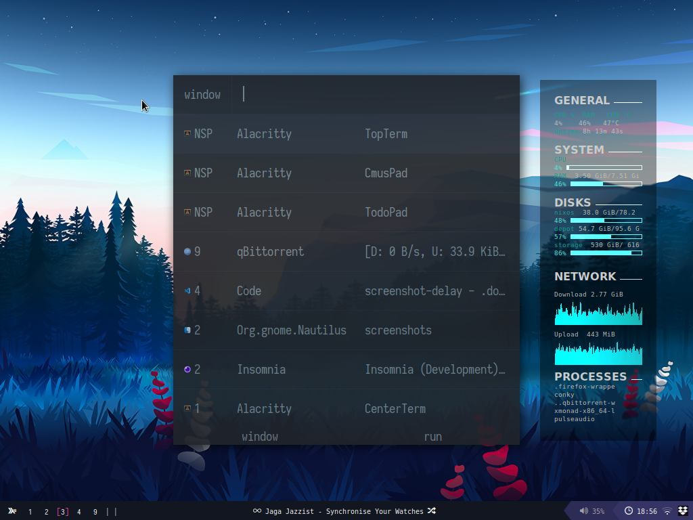

This is a set of configurations for a NixOS-based operating system. In the future, multiple hosts and users should be available to choose from. For now though, there's only two hosts and a single user but it will be easy to create new hosts and users based on the available modules.
This project can be both used in a existing NixOS installation as in a new one.
To use this in a new NixOS installation:
cd /etc/mnt/nixos
git clone github.com/belsier/dotfiles
ln -s dotfiles/hosts/athens/default.nix configuration.nix
nixos-installFor now, some adicional steps are needed to complete the configuration, mainly setting some symlinks and enabling execution of a couple of scripts. This can be done using the bootstrap.sh script.
cd dotfiles
chmod u+x bootstrap.sh
./bootstrap.sh
chmod u-x bootstrap.shTo enable support for multiboot, you need to set the attribute useOSProber to true. You can find it in the default configuration of the choosen host. After building the system with OSProber, you can use the generated grub configuration to import it directly using the multiboot.nix file, this way you don't need to keep the OSProber active for every time you build your system.
The basic directory structure of the project is described below.
├── bootstrap.sh
├── config
│ ├── conky
│ └── xmonad
├── docs
├── hosts
│ ├── athens
│ │ ├── default.nix
│ │ ├── desktop.nix
│ │ ├── file-systems.nix
│ │ ├── fonts.nix
│ │ ├── multiboot-template.nix
│ │ ├── multiboot.nix
│ │ └── system-packages.nix
│ └── rome
│ ├── configuration.nix
│ ├── file-systems.nix
│ └── packages.nix
├── profiles
│ └── atticus
│ ├── config.nix
│ ├── gui.nix
│ ├── home.nix
│ ├── overlays
│ └── packages.nix
├── scripts
├── system
│ ├── common.nix
│ ├── programs
│ │ ├── dconf.nix
│ │ └── gnupg.nix
│ ├── services
│ │ ├── dropbox.nix
│ │ ├── mongodb.nix
│ │ └── redshift.nix
│ └── shared.nix
├── themes
├── user
│ ├── programs
│ └── services
└── wallpaperbootstrap.sh: the install script.config: config directory.docs: cheat-sheets, docs, etc.hosts: the main configuration is choosen from one of the hosts.profiles: userland configuration modules.scripts: user scripts organized by type.system: system configuration modules.themes: themes for rofi and the like.user: user configuration modules.wallpaper: the system wallpaper.This chapter will give a brief overview of the components that comprise this project. The next chapter will explore each one in depth.
All gui-based operating systems use a desktop environment. Desktop environments contain many features, including (but not limited to):
This project uses XMonad (a dynamic window manager) as the default desktop environment. LXQt (a desktop manager) is also available and can be used with XMonad.
System is a collection os modules related to the configurations at the system level, is where you'll find modules that manage things like: desktop environment, file systems, fonts, multiboot support and system packages.
User is a collection os modules related to the configurations at the user level, is where you'll find modules that manage things like: graphical user interface, user packages and overlays.
Scripts are a collection of useful bash scripts organized by categories.
A host will be responsible for composing system modules to configure a brand new NixOS configuration.
A host will be responsible for composing user modules to configure a brand new home-managed configuration.
This chapter will focus on the two available desktop environments: XMonad & LXQt.
XMonad is the default user interface for this system. It uses a highly customized configuration that can be further modified. Below is a list of shortcuts nicely organized by categories.
Launchers will be the main way to launch a new program. Rofi is the default launcher, you can use it to launch a new program or to search for one running.
 Rofi example.
| Shortcut | Action |
|---|---|
<Mod>d |
Rofi: run |
<Mod>p |
Rofi: window |
<Mod>c |
Rofi: clipboard entries |
<Mod><F3> |
Open firefox home |
<Mod><Shift><F3> |
Open firefox surf |
<Mod><F8> |
Open firefox personal |
<Mod><Shift><F8> |
Open firefox work |
<Mod>e |
Open nautilus |
Nothing out of the ordinary, this are the default key bindings used by the XMonad.
| Shortcut | Action |
|---|---|
<Mod>1-9 |
Switch workspace |
<Mod><Shift>1-9 |
Move focused window to workspace |
<Mod>q |
Quit focused window |
<Mod>l |
Expand right |
<Mod>h |
Expand left |
<Mod>k |
Move focus up |
<Mod>j |
Move focus down |
<Mod>enter |
Open terminal |
One of the most important features of this configuration are the scratchpads. Mainly the ones for the terminals. The main terminal can be invoked by simply pressing F1, which will open a top terminal ala guake.
| Shortcut | Action |
|---|---|
<Mod>s |
Toggle Cmus |
<Mod><Alt>s |
Toggle Spotify |
<F1> |
Toggle top terminal scratchpad |
<Mod><F1> or <Mod>a |
toggle bottom terminal scratchpad |
<Mod>o |
Toggle center terminal scratchpad |
<Mod><F4> |
Toggle Vscode |
<F9> |
Toggle todo |
<F10> |
Toggle notes |
<F12> |
Toggle gotop scratchpad |
There are six types of window layouts available in this configuration:
| Shortcut | Action |
|---|---|
<Mod><Space> |
Next layout |
<Mod>b |
Toggle bar |
Power management is done with systemd. Options available are: Lock, suspend, restard and shutdown.
| Shortcut | Action |
|---|---|
<Mod>Pause |
Lock session |
<Mod><Shift>Pause |
Suspend |
<Mod>Home |
Restart |
<Mod>End |
Shutdown |
Multimedia control is done with the help of playerctl. The status of the curretly running multimedia will be displayed at the center of the status bar.
| Shortcut | Action |
|---|---|
<Mod>Home |
Toggle sound |
<Mod>Up |
Increases volume by 5% |
<Mod>Down |
Decreases volume by 5% |
<Mod><Shift>Up |
Increases volume by +15% |
<Mod><Shift>Down |
Decreases volume by 15% |
<Mod>Right |
Plays next track |
<Mod>Left |
Plays previous track |
Capturing a screenshot is easily done using the Print key. The default behaviour is to capture a region.
| Shortcut | Action |
|---|---|
<Print> |
Screenshot the region |
<Mod><Print> |
screenshot the whole screen |
<Mod><Backspace> |
Recompile and restart xmonad |
Keeps the default behaviour of XMonad.
| Shortcut | Action |
|---|---|
<Mod>Left button |
Set the window to floating mode and move by dragging |
<Mod>Middle button |
Set the window to the top of the stack |
<Mod>Right |
Set the window to floating mode and resize by dragging |
Shows a manual.
| Shortcut | Action |
|---|---|
<Mod><Home> |
Show manual (this one) |
<Mod><End> |
Show NixOS installation manual |
This is empty for now.
The system configuration is defined by a specified host. The default host of this system is athens. The host is responsible for setting configurations such as: desktop environment, file systems, fonts, multiboot support and system packages.
The system configuration will manage programs and services at system level.
System services are services managed by systemd. The default host will enable two services: dropbox and redshift.
Below is a is of available services:
Dropbox: a file hosting service.Redshift: adjusts the color temperature of your screen according to your surroundings. You can change the coordinates using the location attribute in the host's configuration.System programs are programs that will be available for all users of the system.
Below is a list of available programs:
GnuPG: enables you to secure your files using state of the art cryptography.The user configuration is defined by a specified profile. The default profile of this system is atticus. The profile is responsible for setting configurations such as: graphical user interface, user packages and overlays.
The user configuration will enable services and programs at user level.
User programs are only available for a specific user of the system.
Firefox is the default browser of the system. The firefox module provides a variety of improvements over the standard installation such as: robust settings, celebrated extensions, multiple profiles and visual adjustments to the Proton interface.
You don't have to worry about messing with the about:config no more. The firefox module comes with sane default settings like: privacy, disabling telemetry, block requests asking to access your device and much more.
The firefox module also includes a couple of extensions by default. You can see the list below.
Available profiles are:
Shells is a collection of modules related to shell.
Fish comes with vi mode enabled by default, a collection of abbreviations and a aliases.
The minimal, blazing-fast, and infinitely customizable prompt for any shell!
The Z shell is the default unix shell of the system. The module enables oh-my-zsh by default.
Visual Studio Code is a source-code editor made by Microsoft. The module comes with a list of extensions and a set of user settings by default.
Alacritty: a free and open-source GPU accelerated terminal emulator focused on performance and simplicity. The module comes with a set of configurations, such as setting fish as its default shell.
fzf: fzf is a general-purpose command-line fuzzy finder.
git: a free and open source distributed version control system designed to handle everything from small to very large projects with speed and efficiency.
mpv: a free media player for the command line. It supports a wide variety of media file formats, audio and video codecs, and subtitle types.
pass: The standard Unix password manager.
Rofi: a window switcher, run dialog, ssh-launcher and dmenu replacement. It is the standard application launcher of the system. The module uses the slate theme.
tmux: a terminal multiplexer for Unix-like operating systems.
vim: The ubiquitous text editor.
zathura: a highly customizable document viewer with vi-styled keybindings.
User services are services managed by systemd. The default user will enable a couple of services by default.
Below is a list of available services:
Dunst: a lightweight replacement for the notification daemons provided by most desktop environments.
NetworkManager: a system network service that manages your network devices and connections and attempts to keep network connectivity active when available.
Picom: a standalone compositor for Xorg, suitable for use with window managers that do not provide compositing.
polybar: A fast and easy-to-use status bar.
screen-locker: a module that uses the program betterlockscreen to manage screen-locking.
This chapter will describe the available scripts of the system.
This are simple scripts that are available in the fish path by default and you can run then simply by typing the script name in the shell.
| Script name | Description |
|---|---|
cheat |
Displays a cheatsheet of specified command. |
clipboard-clear |
Clears the clipboard |
getlyrics |
Search for lyrics of the current song being played. |
journal |
Creates a new entry in your journal using vim. |
rona |
Display corona virus status of specified country. |
set-scheme |
Set the scheme using pywal |
set-volume |
Change the volume. |
set-wal |
Sets the wallpaper. |
translate-only |
Only translate text. |
translate-text |
Translate and write to a file. |
vb-list |
List virtualbox machines. |
vb-start |
Starts specified virtualbox in headless mode. |
vb-stop |
Stops specified virtualbox. |
wttr |
Show weather information for your region. |
ytaudio |
Download youtube audio. |
ytboth |
Download both audio and video. |
ytclip |
Download youtube clip. |
ytvideo |
Download a youtube video. |
| Script name | Description |
|---|---|
firefox-{profile} |
Launch a firefox profile. |
rofid |
Launch rofi run |
rofip |
Launch rofi window |
| Script name | Description |
|---|---|
player-next |
Play the next track |
player-play |
Toggle play |
player-previous |
Play the previous track |
player-seek-ahead |
Seek forwards 5 seconds |
player-seek-before |
Seek backwads 5 seconds |
player-status |
Displays current track information |
| Script name | Description |
|---|---|
lock-session |
Locks the session |
reboot |
Reboot the system |
shutdown |
Shutdown the system |
shutdown |
Suspends the system |
| Script name | Description |
|---|---|
screenshot |
Take a screenshot of the desktop |
screenshot-delay |
Take a screenshot after 5 seconds |
screencap-start |
Starts a video screen capture |
screencap-start |
Stops a video screen capture |
| Script name | Description |
|---|---|
start-redshift |
Starts redshift service |
stop-redshift |
Stops redshift service |
| Script name | Description |
|---|---|
create-docs |
Creates this document |
nixos-cleanup |
Cleans up the system |
nixos-switch |
Runs the NixOS build switch |
nixos-update |
Runs the NixOS upgrade |
As already mentioned, the host will be responsible for setting configurations such as: desktop environment, file systems, fonts, multiboot support, system packages as well as manage programs and services at system level.
The idea of this project is about using one of the available hosts as a blueprint to derivate another host and use the blueprint as a starting point. So, you shouldn't use a host directly. Instead, you should copy an available host and use as a base for your own host configuration.
The hosts here are only a reference, they are not meant to be used.
Athens is considered the default host of this project, its recommended to use it as the blueprint for new hosts. The main module (default.nix always) is located at the hosts/athens directory and we're going to start there.
The default module will be the core of the host configuration. At the top of the file you can edit some basic settings like: username, keyboard layout, hostname, timeZone and the flag to use OSProber (will see this later).
In the the default module you will be able to manage configuration to boot, virtualisation and location. This file should be lean. At the beginning of the module you should notice an imports, this will allow us to compose our modules in a nice way. First, we will look at file-systems.
The file systems module is straightforward: you set a file system, tell where to mount, what device (by UUID or label) and what file system is and that's it.
If you want to enable multiboot with other operating systems you can simply enable the OSProber in the default module and the system will figure out what you have installed and it will generate a grub configuration automatically when you build the system.
However, the build command will take a long time and you probably don't want to waste time every time you build your system configuration. What you can do is only enable the OSProber the first time you build your configuration and then you can use the grub configuration generated by NixOS to get the menu entry for the others systems.
First, use the template available to generate a multiboot file:
cd path/to/host/
cp multiboot-template.nix multiboot.nixOpen the file to get an idea of what kind of stuff you gonna need to paste here.
Now, grab the desired new entries in the grub configuration file. You can check the entries by running (with sudo):
cat /boot/grub/grub.cfgPaste the entries into multiboot.nix file.
Be aware, you only want the menuentry for the others systems, you don't need the menu entries for NixOS or any other stuff in there. If you look into the default module you can check the attribute boot.loader.grub.extraEntries to understand what is doing: It simply adds entries to grub.
The most common configurations will be enabled in this module, sound, pulseaudio, network-manager, the default shell (zsh), setting up the user and it's home directory, the default locate and the system version are all done in the common.nix module.
The shared module composes all of the default modules of the base system: desktop environment, base fonts, system packages, programs and services.
This chapter should've given you an idea of how you should compose your own host. For modules that can be re-used by multiple hosts, you can follow the pattern used in the athens host and save the module in the system directory. For modules that are less reusable, they can be saved in the hosts directory.
Profiles are like hosts, but at user level. A profile will be responsible for setting configurations such as: graphical user interface, user packages, overlays as well as manage programs and services (at user level).
Much like hosts, profiles are about using one of the available profiles as a blueprint to derivate another profile. And like hosts, profiles shouldn't be used directly. Instead, you should copy an available profile and use as a base for your own configuration.
Atticus is considered the default profile of this project, its recommended to use it as the blueprint for new profiles. The main module (home.nix) is located at the profiles/atticus directory and you should set your username in this file.
The same principles used in the hosts can be aplied here: Modules should be lean and composable.
A list of the default programs used for the main activities in the operating system.
| Type | Program |
|---|---|
| Editor | Vim |
| Launcher | Rofi |
| Shell | Fish |
| Status bar | Polybar |
| Terminal | Alacritty |
| Window manager | XMonad |
| Screen locker | Betterlockscreen |
List of the GTK themes used in the default configuration.
| Type | Name |
|---|---|
| GTK Theme | Dracula |
| GTK Icon Theme | WhiteSur |
A list of all the user's installed packages via home-manager.
Comunication
Desktop
Design/Modeling
Development
Download management
File management
Gaming
GTK
Internet
LXQt
Miscelaneaus
Multimedia
Office
Terminal